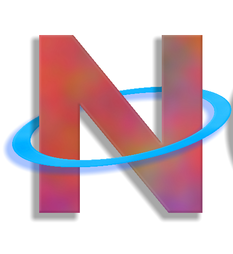
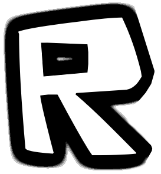
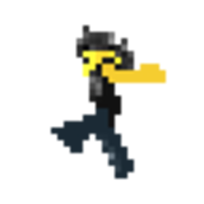

Roblox Launcher List
-

Novetus
Novetus is a 2007-2012 revival that has been a long-standing part of the revival community and has been there for quite a while - over time it has been updated with new features that solidify its place in this community.
Pros:
- Active community
- Great source for old roblox clients
- Has some pre-made rbxl's to mess around with
Cons:
- Some clients have vulnerabilities
Clients
2007E, 2007M, 2008M, 2009E, 2010L, 2011E 2011
-

Sodikm
Sodikm is a launcher from 2010-2016 with 15 clients. Unfortunately, they don't have a website or a Discord server, as the project is currently abandoned. The developer of Sodikm is now actively working on ORRH (Only Retro Roblox Here).
Pros:
- Has some pre-made rbxl's to mess around with
Cons:
- Some clients have vulnerabilities
- The developer abandoned the project
Clients
2010L, 2011E, 2011M, 2011L, 2012E, 2012M, 2012L, 2013E, 2013M, 2013L, 2014M, 2014L, 2015E, 2015M, 2016E
-

RBLXHUB
RBLXHUB is a launcher from 2012-2022 with 12 clients.
Pros:
- Launcher in active developement
Cons:
- Some clients have vulnerabilities
- Small Community
Clients
2012L, 2014E, 2014M, 2014L, 2015E, 2015M, 2016E, 2016L, 2017E, 2019M, 2020M, 2022M
-

ORRH(Only Retro Roblox Here)
ORRH is a launcher from 2007-2013 with 21 clients.
Pros:
- Launcher in active developement
- Active community community
Cons:
- Some clients have vulnerabilities
Clients
2007E, 2007M, 2007L, 2008E, 2008M, 2008L, 2009E, 2009M, 2009L, 2010E, 2010M, 2010L, 2011E, 2011M, 2011L, 2012E, 2012M, 2012L, 2013E, 2013M, 2013L
-

RFD(Roblox Filtering Disabled)
RFD is a launcher from 2008-2022 with 11 clients.
Pros:
- uhm
Cons:
- Some clients have vulnerabilities
- The developer abandoned the project
- Small community
Clients
2008M, 2013L, 2014M, 2016L, 2017M, 2018E, 2018M, 2018L, 2020L, 2021E, 2022M